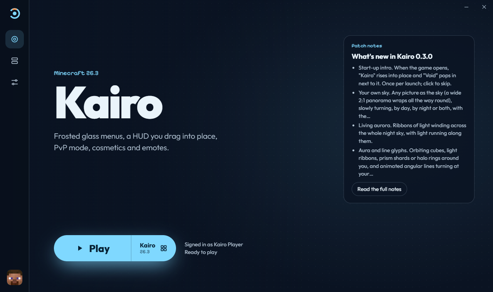
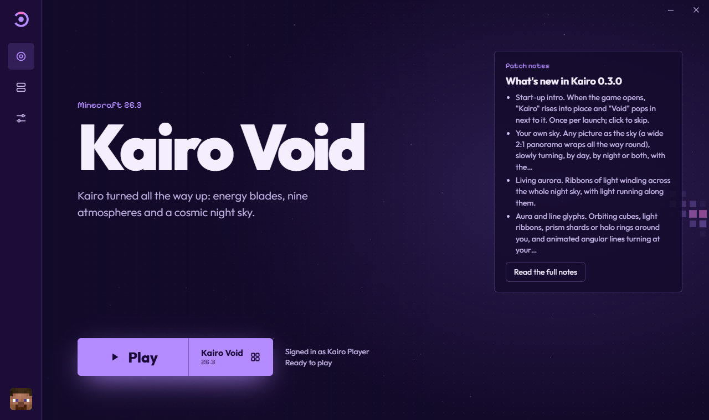

Kairo
Launcher
Kairo, Kairo Void, plain Minecraft and your own modded installs, behind one Play button. Sign in with Microsoft, pick, play.
Free and open source. Your password stays on Microsoft's own page. No telemetry, no accounts of our own.


The real launcher. Switch to Void up top and watch it follow.
Pick what you play
Every install has its own folder: its own mods, worlds and settings, so nothing gets mixed up. Make as many as you like.
Made like the client
The same glass, the same motion and the same care as Kairo, around everything a launcher has to get right.
A look inside
Real screenshots of version 0.1.0.
Download
Free. Every release is built by GitHub Actions from the public code, and every installer comes with Mordsome's signature, so the launcher's own updates can't be faked.
It talks to these, and nothing else
No analytics, no telemetry, no account of ours. Your sign-in stays in your system's secure storage, and the launcher never sees your password. This website doesn't track you either: no cookies, no outside fonts or scripts.
Questions people ask
Is it free?
Yes, free and open source under GPL-3.0. You need your own copy of Minecraft: Java Edition.
Is signing in safe?
You sign in on Microsoft's own page in your browser, the official way. The launcher never sees your password, keeps your sign-in only in your system's secure storage, and only ever sends it to Microsoft, Xbox and Mojang.
Can I play without buying Minecraft?
No. Kairo Launcher checks that your account owns the game, like the official launcher. There's no cracked or offline mode.
Windows says it "protected your PC". Is that bad?
The installer isn't code-signed yet, so SmartScreen warns about any new app like it. Download it only from this site or the GitHub releases page, then choose More info → Run anyway.
Does it work with OptiFine and Forge?
Yes. Both ask launchers not to download them automatically, so the launcher opens their own pages, you pick the file, and the launcher checks it and installs it.
Can I use my own .minecraft?
Yes, if you like: Settings → Game → Share with Minecraft. Your worlds, packs and settings are there, while mods stay in each install's own folder. Your .minecraft/mods is never used or changed.
Linux? Mac?
Windows and Linux (as an AppImage). macOS maybe later.
Is this official?
No. It's made by Mordsome, not by Mojang or Microsoft. Minecraft comes straight from Mojang's servers, and the launcher never redistributes it.
Who made this?
Mordsome, with a lot of help from AI, the same way as Kairo. The ideas, taste and testing are mine; the code came from the machine.